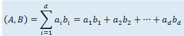

第一行包含3个正整数n,d,k，分别表示向量的个数，维数以及待检测的倍数。接下来n行每行有d个非负整数，其中
第i行的第j个整数表示向量xi的第j维权值xi,j。
N<=100000,D<=30,K<=3,Xi,j<10
两个d 维向量A=[a1,a2,...,ad]与B=[b1,b2,...,bd]的内积为其相对应维度的权值的乘积和，即：

现有 n 个d 维向量x1,...,xn ，小喵喵想知道是否存在两个向量的内积为k的倍数。请帮助她解决这个问题
2 20 2
0 0 1 1 1 1 1 0 1 1 1 0 1 0 0 0 1 1 1 1
1 0 1 0 1 0 1 1 1 1 0 1 1 1 0 1 1 0 1 0
1 2
新增数据一组,但未重测By TA1111,2016.5.17